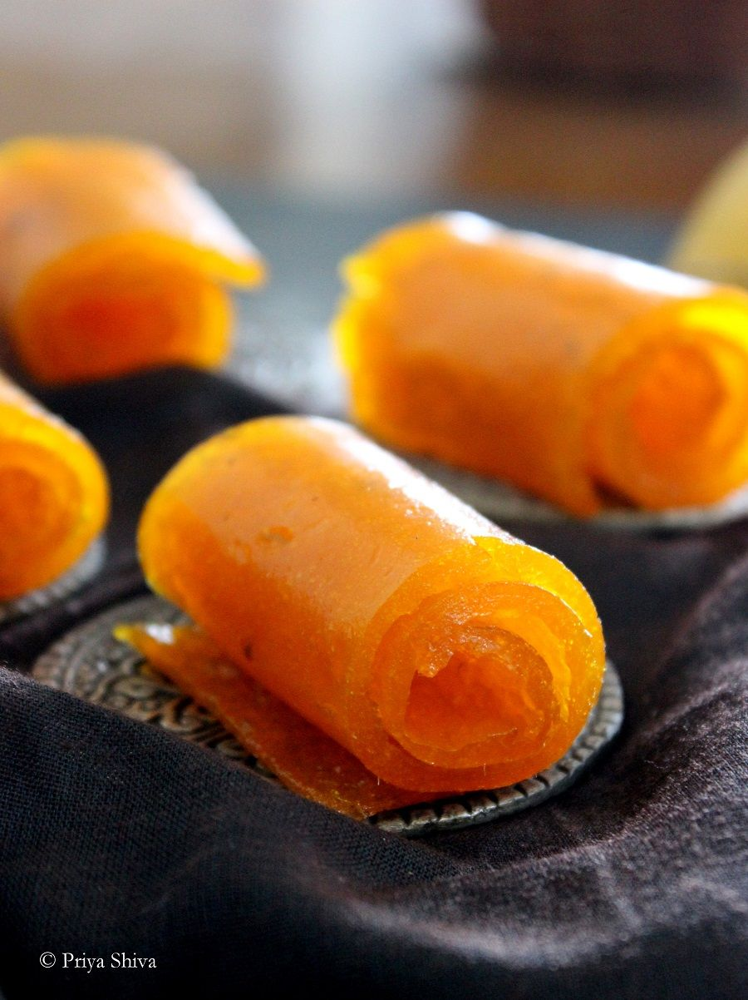
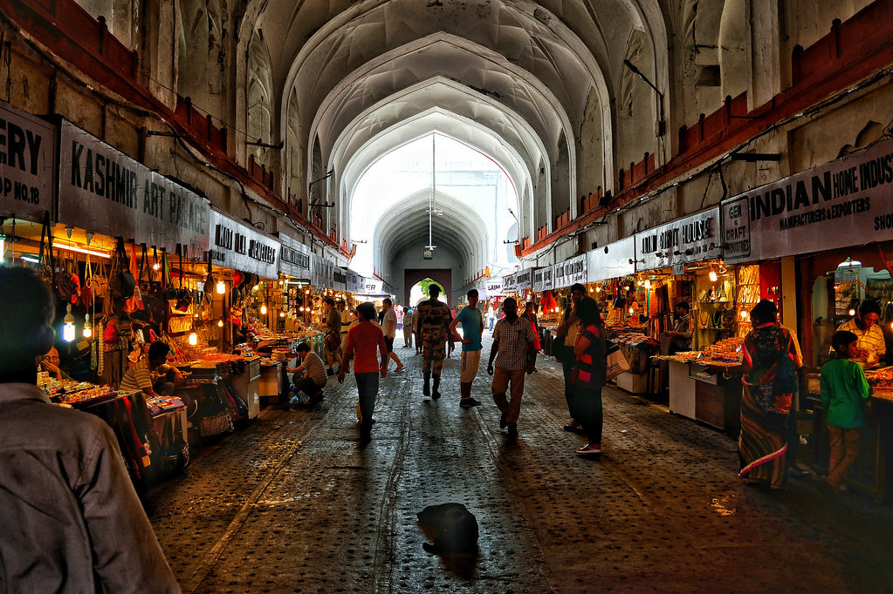
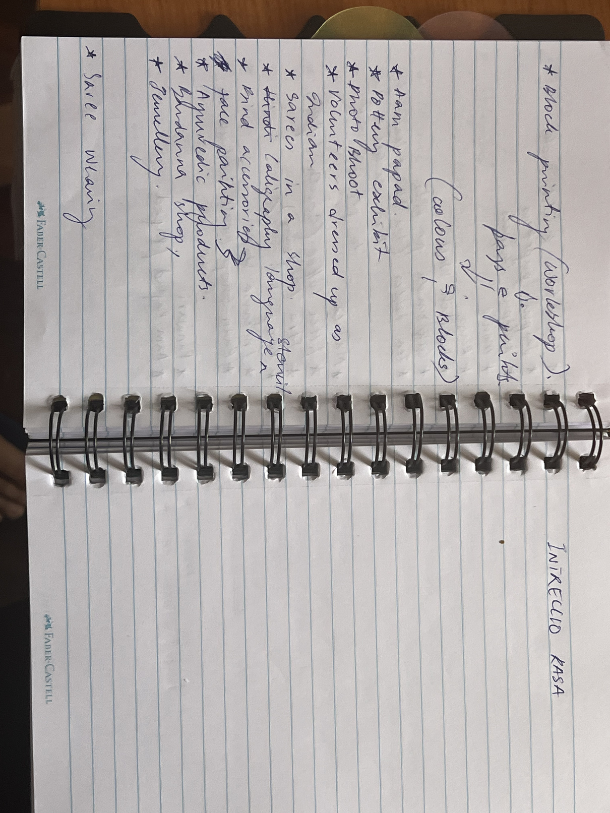
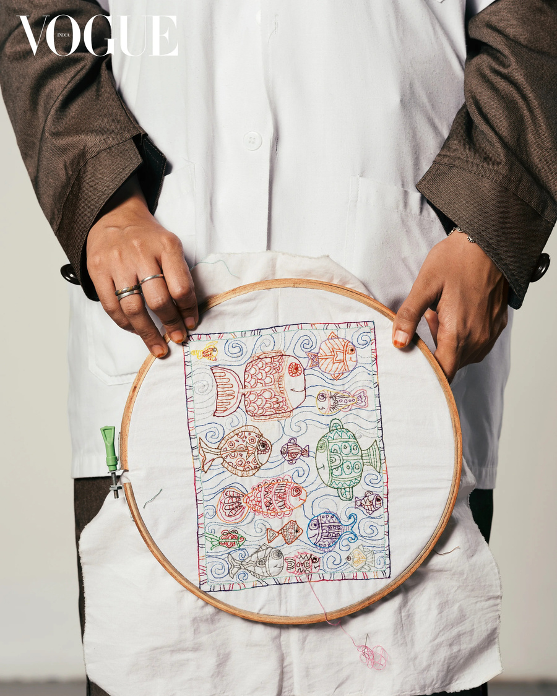
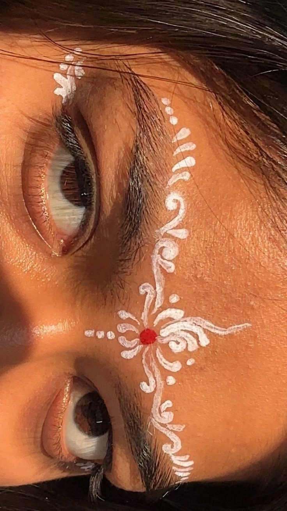
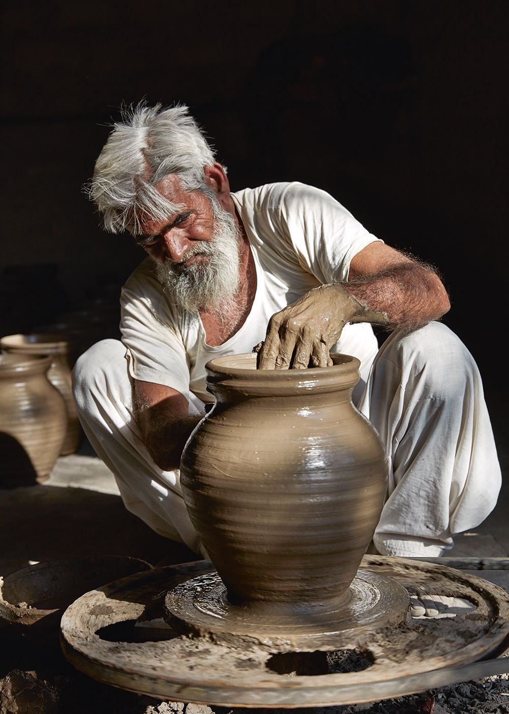
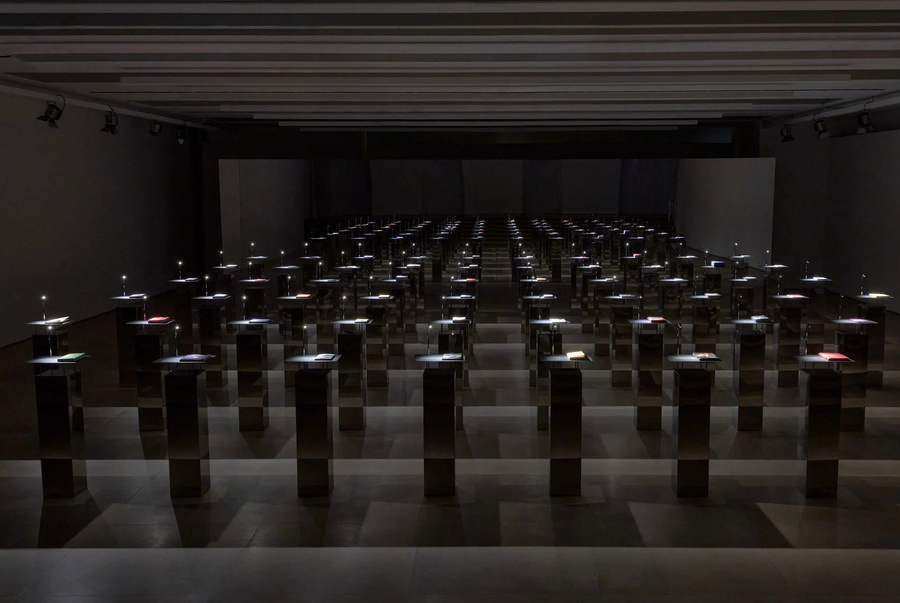

All Experiences
THE
STALLS
Over 25 immersive stalls, workshops, and installations across five sensory zones — each one a fragment of ordinary Indian life, made extraordinary.
Over 25 immersive stalls, workshops, and installations across five sensory zones — each one a fragment of ordinary Indian life, made extraordinary.
A curated swatch book exhibition showcasing textiles and fabric samples. Guests explore swatches while wearing gloves — creating a premium, museum-like interaction that emphasises the value and delicacy of the fabrics. In collaboration with Chanakya International, whose mastery of embroidery is world-renowned.

One of India's most well-preserved forms of craftsmanship. The exhibit explores the striking similarities between Italian leather craftsmanship and the handmade leather techniques of Kolhapuri chappals — a dialogue between two great artisanal traditions celebrating shared appreciation for quality, heritage, and timeless craft.

India is equally rich in its heritage of rugs, weaving traditions, and intricate patterns. The exhibit highlights artistry and history behind Indian rugs — the stories, cultural significance, and historical evolution, alongside the musical instruments played while sitting on these carpets, showcasing the essence of humility, togetherness, and respect.
The artisan demonstrates the "thump" — the specific physical force needed to transfer pigment perfectly. A sensory experience: smell the pigment, hear the block hitting the table, and see the visual reveal of the pattern. A long roll of fabric where every participant adds one "stamp" — by the end, a community textile representing the collective energy of the event.

Sustainable fashion activity using recycled saree fabrics. Visitors can pick fabric pieces and style them as bandanas, bag accessories, scarves, or wrist ties — promoting creativity, individuality, and textile upcycling, while highlighting the beauty of Indian prints, embroidery, and craftsmanship in a modern way.

Imagine walking into a space and being stopped not by a banner or a screen — but by the smell of freshly brewed chai and the rich aroma of Indian spices. A masala table loaded with spices from across India where visitors can see, touch, and smell ingredients that have been at the heart of Indian cooking for centuries. Two senses, one stall, and the whole story of India in a single stop.

This stall transports the audience to the 17th-century Mughal courts, where fragrance was a symbol of power, spirituality, and poetic refinement. A Scent Library where guests can explore the deep, evolving notes of Oud, Sandalwood, and the legendary Rooh Gulab. The "Slow" Perfume: unlike modern sprays that evaporate, Itra is oil-based and melts into the skin.
A collaborative exhibit with sustainable Indian incense brands, showcasing the rich heritage, craftsmanship, and cultural significance of incense in Indian life. The installation explores how incense has been deeply woven into Indian culture for generations — playing an important role in rituals, spirituality, meditation, celebrations, and everyday life.
Mouth fresheners are an essential part of Indian food culture, traditionally enjoyed after meals to cleanse the palate and aid digestion. From sweet blends to spiced masala mixes, visitors can sample and experience a variety of traditional mouth fresheners — reflecting the familiar Indian habit of casually chewing on flavorful blends while socialising on busy streets and markets.

India's richness extends far beyond culture and textiles — cinema also plays a deeply significant role in shaping the country's identity. Iconic and influential films that transformed Indian cinema — not only within the country but globally. Each narrative reflects fragments of everyday Indian life, creating a strong connection between cinema, culture, and lived experiences.
A giant half-finished Rangoli wall — and every visitor gets a set of stickers to complete it! Rangoli is one of India's most beautiful and colourful traditions, and instead of just looking at it, people get to be part of it. Every visitor adds their piece, every sticker tells a story, and by the end of the exhibition the wall becomes a masterpiece made by hundreds of hands together.
Unlike a static shop, this is a performance-led stall. The artisan doesn't just sell an object — they sell the "birth" of a story. Every brushstroke applied live to the clay acts as a bridge between the soil of India and the eyes of Milan. Pots of varying scales, from tiny kulhads to massive matkas, clustered together create a rhythmic, undulating landscape of clay.

A creative space celebrating Indian scripts and typography. Visitors can write their names or favourite words using stencils or with the help of a professional calligrapher. Showcases the beauty of Indian languages and handwritten art forms that span millennia of literary and artistic tradition.
A curated collection of traditional and contemporary Indian jewellery pieces. Includes styles inspired by different regions of India — jhumkas, bangles, anklets, nose rings, and layered necklaces. Visitors can explore Indian craftsmanship, colours, and ornamentation culture in a vibrant and festive shopping experience.
India has one of the richest tea cultures in the world and this stall brings that experience directly to people in a personal, approachable way. Free samples naturally draw crowds. A warm cup of tea is a conversation starter, and every visitor who tries one leaves with a positive memory. We turn foot traffic into genuine engagement — not just people walking past, but people stopping, sipping, and listening.

The legendary South Indian filter coffee — known for its bold, rich flavour and the iconic way it is poured from a steel tumbler to a davara. Filter coffee is not just a drink — it is a ritual, a tradition, a piece of culture that millions of people in South India wake up to every single morning.

In India, making papad is a communal summer ritual for women. This stall honours "Grandmother's Geometry" — the precision of laying out perfect circles of dough to bake under the sun. The palette: shades of ochre, turmeric yellow, terracotta, and translucent burnt orange. The feel: organic, artisanal, and slow-made.

A street-food style area with regional stalls covering North, South, East, and West Indian cuisines. Includes a Masala Chai corner and traditional Indian sweets. All operators hold valid food permits, and eco-friendly packaging is required throughout.
An interactive workshop celebrating Indian fashion and craftsmanship through creative, hands-on activities. Using leftover katrans (fabric scraps) as the base material for doll clothing, the workshop also highlights the importance of sustainability and mindful reuse. The dolls will remain in their original form, while participants can personalize the faces and add detailing of their choice — each piece unique. Customized dolls can then be taken home as meaningful souvenirs.
A cultural styling station where visitors can try wearing a saree — six yards of elegance. Different draping styles demonstrated for a fun and interactive experience. Includes a photo corner for capturing memories in traditional Indian attire. A garment with no zippers or buttons, only the grace of the person wearing it.

Interactive beauty station inspired by Indian festive makeup traditions. Visitors can choose from a variety of bindis in different shapes, colours, and designs. Small hand-painted Indian motifs around the eyes, brows, and forehead inspired by henna and traditional art. Encourages playful self-expression and cultural exploration.

Bringing back Gilli Danda — we are creating a live corner where kids can put down their phones and pick up a danda! One of India's oldest street games, played in lanes and fields for hundreds of years — most children today have never even seen it. While their parents enjoy chai, coffee, and spices right next door. Pure joy, pure India.

A dedicated space showcasing traditional Indian beauty rituals and Ayurvedic self-care. Display of herbal oils, natural ingredients, skincare, and haircare products. Interactive experience where visitors can explore ingredients like amla, neem, hibiscus, sandalwood, and turmeric. Promotes wellness, sustainability, and India's rich heritage in natural beauty care.
Stepping into a technicolor time capsule where the street corner meets the gallery. "The Neon Betel" is an immersive installation that reimagines the iconic Indian Paan Wadi through the lens of Indian Kitsch and Maximalism. We are bringing this "organized chaos" to Milan — stripping away the mundane and amplifying the extraordinary.

The centrepiece of the event. A formal opening ceremony featuring the Consul General of India and a Comune di Milano representative — followed by classical Kathak and Bharatanatyam dance, a professional Bollywood medley troupe, and a live Sitar & fusion music ensemble.
Plan Your Visit →